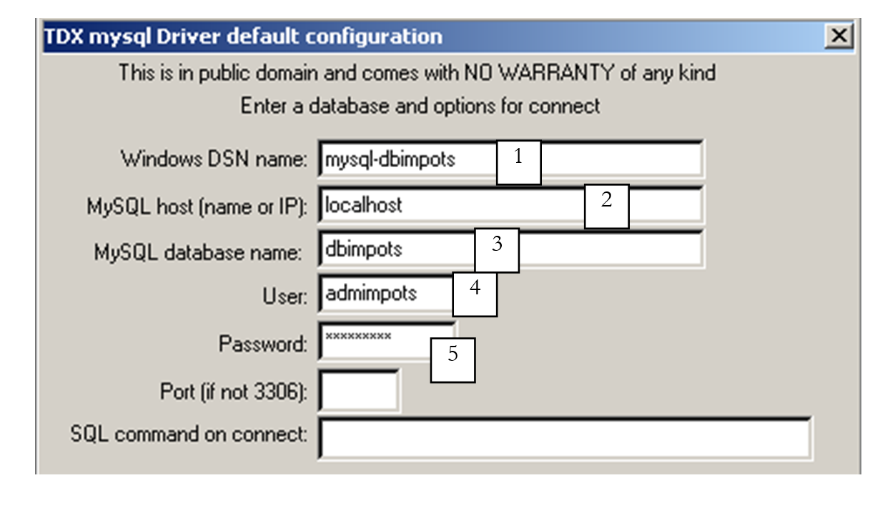
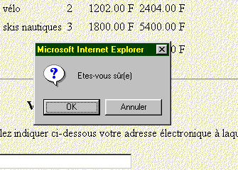

6. Datenbankverwaltung mit API JDBC
6.1. Allgemeines
Es gibt zahlreiche Datenbanken auf dem Markt. Um den Zugriff auf Datenbanken unter Windows zu vereinheitlichen, hat Microsoft eine Schnittstelle namens „Open DataBase Connectivity“ entwickelt. Diese Schicht verbirgt die Besonderheiten der einzelnen Datenbanken hinter einer Standardschnittstelle. Unter Windows gibt es zahlreiche Treiber, die den Zugriff auf Datenbanken erleichtern. Hier ist beispielsweise eine Liste von Treibern, die auf einem Win95-Rechner installiert sind:

Eine Anwendung, die auf diesen Treibern basiert, kann jede der oben genannten Datenbanken nutzen, ohne dass eine Neuprogrammierung erforderlich ist.

Damit auch Java-Anwendungen die Schnittstelle ODBC nutzen können, hat Sun die Schnittstelle JDBC (Java DataBase Connectivity) entwickelt, die zwischen der Java-Anwendung und der Schnittstelle ODBC geschaltet wird:

6.2. Wichtige Schritte beim Betrieb von Datenbanken
6.2.1. Einleitung
In einer JAVA-Anwendung, die eine Datenbank mit der Schnittstelle JDBC nutzt, sind in der Regel die folgenden Schritte zu finden:
- Verbindung zur Datenbank
- Senden von Abfragen (SQL) an die Datenbank
- Empfang und Verarbeitung der Ergebnisse dieser Abfragen
- Schließen der Verbindung
Die Schritte 2 und 3 werden wiederholt ausgeführt, wobei das Schließen der Verbindung erst am Ende der Datenbankauswertung erfolgt. Dies ist ein relativ klassisches Schema, mit dem Sie vielleicht bereits vertraut sind, wenn Sie schon einmal interaktiv mit einer Datenbank gearbeitet haben. Wir werden jeden dieser Schritte anhand eines Beispiels näher erläutern. Wir betrachten eine Datenbank mit dem Namen ACCESS, die als ARTICLES bezeichnet wird und folgende Struktur aufweist:
name | Typ |
code | 4-stelliger Artikelcode |
nom | Name (Zeichenkette) |
prix | Preis (tatsächlich) |
stock_actu | sein aktueller Lagerbestand (Ganzzahl) |
stock_mini | der Mindestbestand (ganze Zahl), unterhalb dessen der Artikel nachbestellt werden muss |
Diese Datenbank ACCESS ist im Datenbankmanager als „Benutzer“-Datenquelle definiert:


Ihre Merkmale werden über die Schaltfläche Configurer wie folgt festgelegt:

Diese Konfiguration besteht im Wesentlichen darin, der Datenbank ARTICLES die dieser Datenbank entsprechende Access-Datei articles.mdb zuzuordnen. Ist dies geschehen, ist die Datenbank ARTICLES für Anwendungen zugänglich, die die Schnittstelle ODBC nutzen.
6.2.2. Der Verbindungsschritt
Um eine Datenbank nutzen zu können, muss eine Java-Anwendung zunächst eine Verbindungsphase durchführen. Dies geschieht mit der folgenden Klassenmethode:
mit
DriverManager: Java-Klasse, die die Liste der für die Anwendung verfügbaren Treiber enthält
Connection: Java-Klasse, die eine Verbindung zwischen der Anwendung und der Datenbank herstellt, über die die Anwendung Abfragen an die Datenbank sendet und Ergebnisse empfängt
URL: Name, der die Datenbank identifiziert. Dieser Name entspricht den URL im Internet. Deshalb ist er Teil der Klasse URL. Das Internet spielt hier jedoch keinerlei Rolle. URL hat folgende Form:
jdbc:nom_du_pilote:nom_de_la_source;param=val1;param2=val2
In unseren Beispielen, in denen ausschließlich ODBC-Treiber verwendet werden, heißt der Treiber „odbc“. Der dritte Teil des URL besteht aus dem Namen der Quelle mit eventuellen Parametern. In unseren Beispielen handelt es sich um dem System bekannte Datenquellen. Somit lautet der URL der zuvor definierten Datenquelle Articles
jdbc:odbc:Articles
id: Benutzername (Login)
mdp: Benutzerkennwort (Passwort)
Zusammenfassend lässt sich sagen, dass das Programm eine Verbindung zu einer Datenbank herstellt:
- die durch einen Namen (URL) identifiziert wird
- unter der Identität eines Benutzers (ID, Passwort)
Sind diese drei Parameter korrekt und existiert der Treiber, der die Verbindung der Java-Anwendung zur angegebenen Datenbank herstellen kann, wird eine Verbindung zwischen der Java-Anwendung und der Datenbank hergestellt. Diese wird für das Programm durch das Objekt vom Typ Connection verkörpert, das von der Klasse DriverManager zurückgegeben wird. Da diese Verbindung aus verschiedenen Gründen fehlschlagen kann, kann sie eine Ausnahme auslösen. Man schreibt daher:
Connection connexion=null;
URL base=...;
String id=...;
String mdp=...;
try{
connexion=DriverManager.getConnection(base,id,mdp);
} catch (Exception e){
// Ausnahme behandeln
}
Damit eine Verbindung zu einer Datenbank hergestellt werden kann, muss der entsprechende Treiber vorhanden sein. In unseren Beispielen handelt es sich um den Treiber ODBC, der die angeforderte Datenbank verwalten kann. Dieser Treiber muss in der Liste der auf dem Rechner vorhandenen ODBC-Treiber enthalten sein; außerdem muss die Klasse JAVA vorhanden sein, die als Schnittstelle zu diesem Treiber dient. Dazu fordert die Anwendung die benötigte Klasse wie folgt an:
Die Klasse „Class“ steht in keinerlei Zusammenhang mit der Schnittstelle JDBC. Es handelt sich um eine allgemeine Klasse zur Verwaltung von Klassen. Ihre statische Methode forName ermöglicht es, eine Klasse dynamisch zu laden und somit deren Attribute und statische Methoden zu nutzen. Die Klasse, die als Schnittstelle zu den Windows-Treibern ODBC und MS dient, heißt „sun.jdbc.odbc.JdbcOdbcDriver“. Man schreibt also (die Methode kann eine Ausnahme auslösen):
try{
Class.forName(« sun.jdbc.odbc.JdbcOdbcDriver ») ;
} catch (Exception e){
// Ausnahme behandeln (Klasse existiert nicht)
}
Die für die Schnittstelle JDBC erforderlichen Klassen befinden sich im Paket java.sql. Zu Beginn des Programms wird daher Folgendes geschrieben:
Hier ist ein Programm, das die Verbindung zu einer Datenbank ermöglicht:
import java.sql.*;
import java.io.*;
// Aufruf: pg PILOTE URL UID MDP
// stellt über die Klasse JDBC PILOTE eine Verbindung zur Datenbank URL her
// Der Benutzer UID wird durch ein Passwort identifiziert: MDP
public class connexion1{
static String syntaxe="pg PILOTE URL UID MDP";
public static void main(String arg[]){
// Überprüfung der Anzahl der Argumente
if(arg.length<2 || arg.length>4)
erreur(syntaxe,1);
// Verbindung zur Datenbank
Connection connect=null;
String uid="";
String mdp="";
if(arg.length>=3) uid=arg[2];
if(arg.length==4) mdp=arg[3];
try{
Class.forName(arg[0]);
connect=DriverManager.getConnection(arg[1],uid,mdp);
System.out.println("Connexion avec la base " + arg[1] + " établie");
} catch (Exception e){
erreur("Erreur " + e,2);
}
// Abschluss der Datenbank
try{
connect.close();
System.out.println("Base " + arg[1] + " fermée");
} catch (Exception e){}
}// Hauptprogramm
public static void erreur(String msg, int exitCode){
System.err.println(msg);
System.exit(exitCode);
}
}// Klasse
Hier ist ein Ausführungsbeispiel:
E:\data\java\jdbc\0>java connexion1 sun.jdbc.odbc.JdbcOdbcDriver jdbc:odbc:articles
Connexion avec la base jdbc:odbc:articles établie
Base jdbc:odbc:articles fermée
6.2.3. Senden von Abfragen an die Datenbank
Die Schnittstelle JDBC ermöglicht das Senden von Abfragen (SQL) an die mit der Java-Anwendung verbundene Datenbank sowie die Verarbeitung der Ergebnisse dieser Abfragen. Die Sprache SQL (Structured Query Language) ist eine standardisierte Abfragesprache für relationale Datenbanken. Dabei werden verschiedene Arten von Abfragen unterschieden:
- Abfragen zur Datenauswertung (SELECT)
- Abfragen zur Aktualisierung der Datenbank (INSERT, DELETE, UPDATE)
- Abfragen zum Anlegen/Löschen von Tabellen (CREATE, DELETE)
Hier wird davon ausgegangen, dass der Leser über Grundkenntnisse der Sprache SQL verfügt.
6.2.3.1. Die Klasse „Statement“
Um eine beliebige SQL-Abfrage an eine Datenbank zu senden, muss die Java-Anwendung über ein Objekt vom Typ „Statement“ verfügen. Dieses Objekt speichert unter anderem den Text der Abfrage. Es ist zwangsläufig mit der aktuellen Verbindung verknüpft. Es ist also eine Methode der hergestellten Verbindung, die es ermöglicht, die für die Ausführung von Abfragen SQL erforderlichen Objekte Statement zu erstellen. Wenn connexion das Objekt ist, das die Verbindung zur Datenbank symbolisiert, wird ein Statement-Objekt wie folgt abgerufen:
Sobald ein Objekt Statement vorliegt, können Abfragen vom Typ SQL gesendet werden. Dies erfolgt unterschiedlich, je nachdem, ob es sich um eine Abfrage oder eine Aktualisierung der Datenbank handelt.
6.2.3.2. Eine Abfrage an die Datenbank senden
Eine Abfrage ist in der Regel eine Abfrage vom Typ:
Nur die Schlüsselwörter in der ersten Zeile sind obligatorisch, die anderen sind optional. Es gibt weitere Schlüsselwörter, die hier nicht aufgeführt sind.
- Es wird eine Verknüpfung mit allen Tabellen hergestellt, die hinter dem Schlüsselwort „from“ stehen
- Es werden nur die Spalten beibehalten, die hinter dem Schlüsselwort „select“ stehen
- Es werden nur die Zeilen beibehalten, die die Bedingung des Schlüsselworts `where` erfüllen
- Die resultierenden Zeilen, sortiert nach dem Ausdruck des Schlüsselworts `ORDER BY`, bilden das Ergebnis der Abfrage.
Das Ergebnis einer Abfrage select ist eine Tabelle. Betrachtet man die vorherige Tabelle ARTICLES und möchte die Namen der Artikel ermitteln, deren aktueller Bestand unter dem Mindestbestand liegt, schreibt man: *select name from articles where stock\_actu < stock\_mini*. Wenn man sie in alphabetischer Reihenfolge der Namen haben möchte, schreibt man: select name from articles where stock_actu < stock_mini order by name
Um diese Art von Abfrage auszuführen, bietet die Klasse Statement die Methode executeQuery an:
wobei requête der Text der abzusendenden Abfrage SELECT ist.
Wenn also
- connexion das Objekt ist, das die Verbindung zur Datenbank symbolisiert
- erstellt die Anweisung `s=connexion.createStatement()` das Objekt `Statement`, das für die Ausführung der Abfragen `SQL`
- ResultSet rs=s.executeQuery(„ select name from articles where stock_actu<stock_mini“) führt eine Abfrage select aus und weist die Ergebniszeilen der Abfrage einem Objekt vom Typ ResultSet zu.
6.2.3.3. Die Klasse ResultSet: Ergebnis einer SELECT-Abfrage
Ein Objekt vom Typ ResultSet stellt eine Tabelle dar, d. h. eine Sammlung von Zeilen und Spalten. Zu einem bestimmten Zeitpunkt hat man nur Zugriff auf eine Zeile der Tabelle, die als aktuelle Zeile bezeichnet wird. Bei der erstmaligen Erstellung des ResultSet ist die aktuelle Zeile die Zeile Nr. 1, sofern das ResultSet nicht leer ist. Um zur nächsten Zeile zu wechseln, verfügt die Klasse ResultSet über die Methode next:
Diese Methode versucht, zur nächsten Zeile von ResultSet zu wechseln und gibt bei Erfolg true zurück, andernfalls false. Bei Erfolg wird die nächste Zeile zur neuen aktuellen Zeile. Die vorherige Zeile geht verloren und kann nicht wiederhergestellt werden. Die Tabelle von ResultSet enthält die Spalten col1, col2, ... Um die verschiedenen Felder der aktuellen Zeile auszuwerten, stehen folgende Methoden zur Verfügung:
um das Feld „coli“ der aktuellen Zeile abzurufen. Type bezeichnet den Typ des Feldes coli. Häufig wird die Methode getString für alle Felder verwendet, wodurch der Inhalt des Feldes als Zeichenkette abgerufen wird. Bei Bedarf erfolgt anschließend eine Konvertierung. Ist der Spaltenname nicht bekannt, können die Methoden
verwenden, wobei i der Index der gewünschten Spalte ist (i >= 1).
6.2.3.4. Ein erstes Beispiel
Hier ist ein Programm, das den Inhalt der zuvor angelegten Datenbank ARTICLES anzeigt:
import java.sql.*;
import java.io.*;
// Zeigt den Inhalt einer Systemdatenbank an ARTICLES
public class articles1{
static final String DB="ARTICLES"; // zu verarbeitende Datenbank
public static void main(String arg[]){
Connection connect=null; // Verbindung zur Datenbank
Statement S=null; // Objekt für die Abfrageübermittlung
ResultSet RS=null; // Ergebnistabelle einer Abfrage
try{
// Verbindung zur Datenbank
Class.forName("sun.jdbc.odbc.JdbcOdbcDriver");
connect=DriverManager.getConnection("jdbc:odbc:"+DB,"","");
System.out.println("Connexion avec la base " + DB + " établie");
// Erstellung eines Statement-Objekts
S=connect.createStatement();
// Ausführung einer SELECT-Abfrage
RS=S.executeQuery("select * from " + DB);
// Auswertung der Ergebnistabelle
while(RS.next()){ // solange noch eine Zeile zu verarbeiten ist
// wird diese auf dem Bildschirm angezeigt
System.out.println(RS.getString("code")+","+
RS.getString("nom")+","+
RS.getString("prix")+","+
RS.getString("stock_actu")+","+
RS.getString("stock_mini"));
}// nächste Zeile
} catch (Exception e){
erreur("Erreur " + e,2);
}
// Schließen der Datenbank
try{
connect.close();
System.out.println("Base " + DB + " fermée");
} catch (Exception e){}
}// Hand
public static void erreur(String msg, int exitCode){
System.err.println(msg);
System.exit(exitCode);
}
}// Klasse
Die Ergebnisse lauten wie folgt:
Connexion avec la base ARTICLES établie
a300,vélo,1202,30,2
d600,arc,5000,10,2
d800,canoé,1502,12,6
x123,fusil,3000,10,2
s345,skis nautiques,1800,3,2
f450,essai3,3,3,3
f807,cachalot,200000,0,0
z400,léopard,500000,1,1
g457,panthère,800000,1,1
Base ARTICLES fermée
6.2.3.5. Die Klasse ResultSetMetadata
Im vorangegangenen Beispiel sind die Spaltennamen der Tabelle ResultSet bekannt. Sind diese nicht bekannt, kann die Methode getType(nom_colonne) nicht verwendet werden. Stattdessen verwenden wir getType(Spaltennummer). Um jedoch alle Spalten zu erhalten, müssten wir wissen, wie viele Spalten die erhaltene ResultSet hat. Die Klasse ResultSet liefert uns diese Information nicht. Diese Information erhalten wir von der Klasse ResultSetMetaData. Allgemeiner gesagt liefert uns diese Klasse Informationen über die Struktur der Tabelle, d. h. über die Art ihrer Spalten.
Wir erhalten Zugriff auf die Strukturinformationen eines ResultSet, indem wir zunächst ein Objekt vom Typ ResultSetMetaData instanziieren. Wenn RS ein ResultSet ist, erhält man das zugehörige ResultSetMetaData wie folgt:
In der Klasse ResultSetMetaData sind zwei nützliche Methoden zu beachten:
- int getColumnCount(), das die Anzahl der Spalten des ResultSet zurückgibt
- String getColumnLabel(int i), das den Namen der Spalte i von ResultSet zurückgibt (i >= 1)
6.2.3.6. Ein zweites Beispiel
Das vorherige Programm zeigte den Inhalt der Datenbank ARTICLES an. Hier schreiben wir ein Programm, das in der Datenbank ARTICLES jede Abfrage SQL Select ausführt, die der Benutzer über die Tastatur eingibt.
import java.sql.*;
import java.io.*;
// zeigt den Inhalt einer Systembasis an ARTICLES
public class sql1{
static final String DB="ARTICLES"; // zu verarbeitende Datenbank
public static void main(String arg[]){
Connection connect=null; // Verbindung zur Datenbank
Statement S=null; // Zielobjekt der Abfragen
ResultSet RS=null; // Ergebnistabelle einer Abfrage
String select; // Text der Abfrage SQL SELECT
int nbColonnes; // Anzahl der Spalten von ResultSet
// Erstellung eines Tastatureingabestroms
BufferedReader in=null;
try{
in=new BufferedReader(new InputStreamReader(System.in));
} catch(Exception e){
erreur("erreur lors de l'ouverture du flux clavier ("+e+")",3);
}
try{
// Verbindung zur Datenbank
Class.forName("sun.jdbc.odbc.JdbcOdbcDriver");
connect=DriverManager.getConnection("jdbc:odbc:"+DB,"","");
System.out.println("Connexion avec la base " + DB + " établie");
// Erstellung eines Statement-Objekts
S=connect.createStatement();
// Schleife zur Ausführung der über die Tastatur eingegebenen Abfragen SQL
System.out.print("Requête : ");
select=in.readLine();
while(!select.equals("fin")){
// Ausführung der Abfrage
RS=S.executeQuery(select);
// Anzahl der Spalten
nbColonnes=RS.getMetaData().getColumnCount();
// Auswertung der Ergebnistabelle
System.out.println("Résultats obtenus\n\n");
while(RS.next()){ // solange noch eine Zeile zu verarbeiten ist
// wird sie auf dem Bildschirm angezeigt
for(int i=1;i<nbColonnes;i++)
System.out.print(RS.getString(i)+",");
System.out.println(RS.getString(nbColonnes));
}// nächste Zeile
// nächste Abfrage
System.out.print("Requête : ");
select=in.readLine();
}// while
} catch (Exception e){
erreur("Erreur " + e,2);
}
// Schließen der Datenbank und des Eingabestroms
try{
connect.close();
System.out.println("Base " + DB + " fermée");
in.close();
} catch (Exception e){}
}// main
public static void erreur(String msg, int exitCode){
System.err.println(msg);
System.exit(exitCode);
}
}// Klasse
Hier sind einige der erzielten Ergebnisse:
Connexion avec la base ARTICLES établie
Requête : select * from articles order by prix desc
Résultats obtenus
g457,panthère,800000,1,1
z400,léopard,500000,1,1
f807,cachalot,200000,0,0
d600,arc,5000,10,2
x123,fusil,3000,10,2
s345,skis nautiques,1800,3,2
d800,canoé,1502,12,6
a300,vélo,1202,30,2
f450,essai3,3,3,3
Requête : select nom, prix from articles where prix >10000 order by prix desc
Résultats obtenus
panthère,800000
léopard,500000
cachalot,200000
6.2.3.7. Eine Anfrage zur Aktualisierung der Datenbank senden
Ein Objekt vom Typ Statement dient zur Speicherung von Abfragen vom Typ SQL. Die Methode, die dieses Objekt zum Senden von Aktualisierungsanfragen vom Typ SQL verwendet (INSERT, UPDATE, DELETE) ist nicht mehr die zuvor behandelte Methode executeQuery, sondern die Methode executeUpdate:
Der Unterschied liegt im Ergebnis: Während executeQuery die Ergebnistabelle (ResultSet) zurückgab, gibt executeUpdate die Anzahl der von der Aktualisierungsoperation betroffenen Zeilen zurück.
6.2.3.8. Ein drittes Beispiel
Wir greifen das vorherige Programm wieder auf und nehmen eine geringfügige Änderung vor: Die über die Tastatur eingegebenen Abfragen sind nun Aktualisierungsabfragen für die Datenbank ARTICLES.
import java.sql.*;
import java.io.*;
// Zeigt den Inhalt einer Systemdatenbank an ARTICLES
public class sql2{
static final String DB="ARTICLES"; // zu verarbeitende Datenbank
public static void main(String arg[]){
Connection connect=null; // Verbindung zur Datenbank
Statement S=null; // Objekt für die Abfrageübermittlung
ResultSet RS=null; // Ergebnistabelle einer Abfrage
String sqlUpdate; // Text der Aktualisierungsabfrage SQL
int nbLignes; // Anzahl der von einer Aktualisierung betroffenen Zeilen
// Erstellung eines Tastatureingabestroms
BufferedReader in=null;
try{
in=new BufferedReader(new InputStreamReader(System.in));
} catch(Exception e){
erreur("erreur lors de l'ouverture du flux clavier ("+e+")",3);
}
try{
// Verbindung zur Datenbank
Class.forName("sun.jdbc.odbc.JdbcOdbcDriver");
connect=DriverManager.getConnection("jdbc:odbc:"+DB,"","");
System.out.println("Connexion avec la base " + DB + " établie");
// Erstellung eines Statement-Objekts
S=connect.createStatement();
// Schleife zur Ausführung der über die Tastatur eingegebenen Abfragen
System.out.print("Requête : ");
sqlUpdate=in.readLine();
while(!sqlUpdate.equals("fin")){
// Ausführung der Abfrage
nbLignes=S.executeUpdate(sqlUpdate);
// Nachverfolgung
System.out.println(nbLignes + " ligne(s) ont été mises à jour");
// nächste Abfrage
System.out.print("Requête : ");
sqlUpdate=in.readLine();
}// while
} catch (Exception e){
erreur("Erreur " + e,2);
}
// Schließen der Datenbank und des Eingabestroms
try{
// Freigabe der mit der Datenbank verbundenen Ressourcen
RS.close();
S.close();
connect.close();
System.out.println("Base " + DB + " fermée");
// Tastatur-Datenstrom schließen
in.close();
} catch (Exception e){}
}// Hand
public static void erreur(String msg, int exitCode){
System.err.println(msg);
System.exit(exitCode);
}
}// Klasse
Hier ist das Ergebnis verschiedener Ausführungen der Programme sql1 und sql2:
Liste der Zeilen der Datenbank ARTICLES:
E:\data\java\jdbc\0>java sql1
Connexion avec la base ARTICLES établie
Requête : select nom,stock_actu from articles
Résultats obtenus
vélo,30
arc,10
canoé,12
fusil,10
skis nautiques,3
essai3,3
cachalot,0
léopard,1
panthère,1
Man ändert bestimmte Zeilen:
E:\data\java\jdbc\0>java sql2
Connexion avec la base ARTICLES établie
Requête : update articles set stock_actu=stock_actu+1 where stock_actu>10
2 ligne(s) ont été mises à jour
Überprüfung:
E:\data\java\jdbc\0>java sql1
Connexion avec la base ARTICLES établie
Requête : select nom,stock_actu from articles
Résultats obtenus
vélo,31
arc,10
canoé,13
fusil,10
skis nautiques,3
essai3,3
cachalot,0
léopard,1
panthère,1
Fügen Sie folgende Zeile hinzu:
E:\data\java\jdbc\0>java sql2
Connexion avec la base ARTICLES établie
Requête : insert into articles (code,nom,prix,stock_actu,stock_mini) values ('x400','nouveau',200,20,10)
1 ligne(s) ont été mises à jour
Überprüfung:
E:\data\java\jdbc\0>java sql1
Connexion avec la base ARTICLES établie
Requ_te : select nom,stock_actu from articles
Résultats obtenus
vélo,31
arc,10
canoé,13
fusil,10
skis nautiques,3
essai3,3
cachalot,0
léopard,1
panthère,1
nouveau,20
Eine Zeile wird gelöscht:
E:\data\java\jdbc\0>java sql2
Connexion avec la base ARTICLES établie
Requête : delete from articles where code='x400'
1 ligne(s) ont été mises à jour
Requête : fin
Überprüfung:
E:\data\java\jdbc\0>java sql1
Connexion avec la base ARTICLES établie
Requête : select nom,stock_actu from articles
Résultats obtenus
vélo,31
arc,10
cano_,13
fusil,10
skis nautiques,3
essai3,3
cachalot,0
léopard,1
panthère,1
6.2.3.9. Eine beliebige Anfrage SQL senden
Das für die Ausgabe von Abfragen vom Typ SQL erforderliche Objekt Statement verfügt über eine Methode execute, mit der jede Art von Abfrage vom Typ SQL ausgeführt werden kann:
Das zurückgegebene Ergebnis ist der Boolesche Wert true, wenn die Abfrage einen Wert ResultSet (executeQuery) zurückgegeben hat, bzw. false, wenn sie eine Zahl (executeUpdate). Der erhaltene Wert ResultSet kann mit der Methode getResultSet abgerufen werden, die Anzahl der aktualisierten Zeilen mit der Methode getUpdateCount. Somit schreibt man:
Statement S=...;
ResultSet RS=...;
int nbLignes;
String requête=...;
// Ausführung einer Abfrage SQL
if (S.execute(requête)){
// Es liegt ein Resultset vor
RS=S.getResultSet();
// Auswertung des ResultSet
...
} else {
// Es handelte sich um eine Aktualisierungsabfrage
nbLignes=S.getUpdateCount();
...
}
6.2.3.10. Viertes Beispiel
Wir greifen den Grundgedanken der Programme sql1 und sql2 in einem Programm sql3 auf, das nun jede über die Tastatur eingegebene Abfrage SQL ausführen kann. Um das Programm allgemeiner zu gestalten, werden die Merkmale der zu verarbeitenden Datenbank als Parameter an das Programm übergeben.
import java.sql.*;
import java.io.*;
// Aufruf: pg PILOTE URL UID MDP
// stellt über die Klasse JDBC eine Verbindung zur Datenbank URL her PILOTE
// Der Benutzer UID wird durch ein Passwort identifiziert: MDP
public class sql3{
static String syntaxe="pg PILOTE URL UID MDP";
public static void main(String arg[]){
// Überprüfung der Anzahl der Argumente
if(arg.length<2 || arg.length>4)
erreur(syntaxe,1);
// Initialisierung der Verbindungsparameter
Connection connect=null;
String uid="";
String mdp="";
if(arg.length>=3) uid=arg[2];
if(arg.length==4) mdp=arg[3];
// Weitere Daten
Statement S=null; // Objekt zur Abgabe von Abfragen
ResultSet RS=null; // Ergebnistabelle einer Abfrage
String sqlText; // Text der auszuführenden Abfrage SQL
int nbLignes; // Anzahl der von einer Aktualisierung betroffenen Zeilen
int nbColonnes; // Anzahl der Spalten eines ResultSet
// Erstellung eines Tastatureingabestroms
BufferedReader in=null;
try{
in=new BufferedReader(new InputStreamReader(System.in));
} catch(Exception e){
erreur("erreur lors de l'ouverture du flux clavier ("+e+")",3);
}
try{
// Verbindung zur Datenbank
Class.forName(arg[0]);
connect=DriverManager.getConnection(arg[1],uid,mdp);
System.out.println("Connexion avec la base " + arg[1] + " établie");
// Erstellung eines Statement-Objekts
S=connect.createStatement();
// Schleife zur Ausführung der über die Tastatur eingegebenen Abfragen SQL
System.out.print("Requête : ");
sqlText=in.readLine();
while(!sqlText.equals("fin")){
// Ausführung der Abfrage
try{
if(S.execute(sqlText)){
// Es wurde ein ResultSet erhalten – dieses wird ausgewertet
RS=S.getResultSet();
// Anzahl der Spalten
nbColonnes=RS.getMetaData().getColumnCount();
// Auswertung der Ergebnistabelle
System.out.println("\nRésultats obtenus\n-----------------\n");
while(RS.next()){ // solange noch eine Zeile auszuwerten ist
// wird sie auf dem Bildschirm angezeigt
for(int i=1;i<nbColonnes;i++)
System.out.print(RS.getString(i)+",");
System.out.println(RS.getString(nbColonnes));
}// nächste Zeile von ResultSet
} else {
// Es handelte sich um eine Aktualisierungsanfrage
nbLignes=S.getUpdateCount();
// Folge
System.out.println(nbLignes + " ligne(s) ont été mises à jour");
}//if
} catch (Exception e){
System.out.println("Erreur " +e);
}
// nächste Anfrage
System.out.print("\nNouvelle Requête : ");
sqlText=in.readLine();
}// while
} catch (Exception e){
erreur("Erreur " + e,2);
}
// Schließen der Datenbank und des Eingabestroms
try{
// Freigabe der mit der Datenbank verbundenen Ressourcen
RS.close();
S.close();
connect.close();
System.out.println("Base " + arg[1] + " fermée");
// Schließen des Tastatur-Eingabestroms
in.close();
} catch (Exception e){}
}// main
public static void erreur(String msg, int exitCode){
System.err.println(msg);
System.exit(exitCode);
}
}// Klasse
Es wird die folgende Abfragedatei erstellt:
select * from articles
update articles set stock_mini=stock_mini+5 where stock_mini<5
select nom,stock_mini from articles
insert into articles (code,nom,prix,stock_actu,stock_mini) values ('x400','nouveau',100,20,10)
select * from articles
delete from articles where code='x400'
select * from articles
fin
Das Programm wird wie folgt gestartet:
Das Programm liest also seine Eingaben aus der Datei requetes und schreibt seine Ausgaben in die Datei results. Die erhaltenen Ergebnisse lauten wie folgt:
Connexion avec la base jdbc:odbc:articles établie
Requête : (requete 1 du fichier des requetes : select * from articles)
Résultats obtenus
-----------------
a300,vélo,1202,31,3
d600,arc,5000,10,3
d800,canoé,1502,13,7
x123,fusil,3000,10,3
s345,skis nautiques,1800,3,3
f450,essai3,3,3,4
f807,cachalot,200000,0,1
z400,léopard,500000,1,2
g457,panthère,800000,1,2
Nouvelle Requête : (requete 2 du fichier des requetes : update articles set stock_mini=stock_mini+5 where stock_mini<5)
8 ligne(s) ont été mises à jour
Nouvelle Requête : (requete 3 du fichier des requetes : select nom,stock_mini from articles)
Résultats obtenus
-----------------
vélo,8
arc,8
canoé,7
fusil,8
skis nautiques,8
essai3,9
cachalot,6
léopard,7
panthère,7
Nouvelle Requête : (requete 4 du fichier des requetes : insert into articles (code,nom,prix,stock_actu,stock_mini) values ('x400','nouveau',100,20,10))
1 ligne(s) ont été mises à jour
Nouvelle Requête : (requete 5 du fichier des requetes : select * from articles)
Résultats obtenus
-----------------
a300,vélo,1202,31,8
d600,arc,5000,10,8
d800,canoé,1502,13,7
x123,fusil,3000,10,8
s345,skis nautiques,1800,3,8
f450,essai3,3,3,9
f807,cachalot,200000,0,6
z400,léopard,500000,1,7
g457,panthère,800000,1,7
x400,nouveau,100,20,10
Nouvelle Requête : (requete 6 du fichier des requêtes : delete from articles where code='x400')
1 ligne(s) ont été mises à jour
Nouvelle Requête : (requete 7 du fichier des requêtes : select * from articles)
Résultats obtenus
-----------------
a300,vélo,1202,31,8
d600,arc,5000,10,8
d800,canoé,1502,13,7
x123,fusil,3000,10,8
s345,skis nautiques,1800,3,8
f450,essai3,3,3,9
f807,cachalot,200000,0,6
z400,léopard,500000,1,7
g457,panthère,800000,1,7
6.3. IMPOTS mit einer Datenbank
Als wir uns das letzte Mal mit dem Thema Steuerberechnung befasst haben, haben wir eine grafische Benutzeroberfläche verwendet, und die Daten wurden in einer Datei gespeichert. Wir greifen diese Version wieder auf und gehen nun davon aus, dass sich die Daten in einer ODBC-MySQL-Datenbank befinden. MySQL ist eine gemeinfreie Version von SGBD, die auf verschiedenen Plattformen, darunter Windows und Linux, verwendet werden kann. Mit diesem SGBD wurde eine Datenbank namens „dbimpots“ angelegt, die eine einzige Tabelle namens „impots“ enthält. Der Zugriff auf die Datenbank wird über einen Benutzernamen und ein Passwort gesteuert, in diesem Fall „admimpots“ und „mdpimpots“. Der Screenshot zeigt, wie die Datenbank „dbimpots“ mit MySQL verwendet wird:
C:\Program Files\EasyPHP\mysql\bin>mysql -u admimpots -p
Enter password: *********
Welcome to the MySQL monitor. Commands end with ; or \g.
Your MySQL connection id is 18 to server version: 3.23.49-max-nt
Type 'help;' or '\h' for help. Type '\c' to clear the buffer.
mysql> use dbimpots;
Database changed
mysql> show tables;
+--------------------+
| Tables_in_dbimpots |
+--------------------+
| impots |
+--------------------+
1 row in set (0.00 sec)
mysql> describe impots;
+---------+--------+------+-----+---------+-------+
| Field | Type | Null | Key | Default | Extra |
+---------+--------+------+-----+---------+-------+
| limites | double | YES | | NULL | |
| coeffR | double | YES | | NULL | |
| coeffN | double | YES | | NULL | |
+---------+--------+------+-----+---------+-------+
3 rows in set (0.02 sec)
mysql> select * from impots;
+---------+--------+---------+
| limites | coeffR | coeffN |
+---------+--------+---------+
| 12620 | 0 | 0 |
| 13190 | 0.05 | 631 |
| 15640 | 0.1 | 1290.5 |
| 24740 | 0.15 | 2072.5 |
| 31810 | 0.2 | 3309.5 |
| 39970 | 0.25 | 4900 |
| 48360 | 0.3 | 6898 |
| 55790 | 0.35 | 9316.5 |
| 92970 | 0.4 | 12106 |
| 127860 | 0.45 | 16754 |
| 151250 | 0.5 | 23147.5 |
| 172040 | 0.55 | 30710 |
| 195000 | 0.6 | 39312 |
| 0 | 0.65 | 49062 |
+---------+--------+---------+
14 rows in set (0.00 sec)
mysql>quit
Die grafische Benutzeroberfläche der Anwendung sieht wie folgt aus:

Die grafische Benutzeroberfläche wurde in einigen Punkten geändert:
Nr. | Typ | Name | Rolle |
1 | JTextField | txtConnexion | Datenbankverbindungszeichenfolge ODBC |
2 | JScrollPane | JScrollPane1 | Container für das Textarea-Feld 3 |
3 | JTextArea | txtStatus | zeigt Statusmeldungen an, insbesondere Fehlermeldungen |
Die in (1) eingegebene Anmeldekette hat folgende Form: DSN;login;Passwort mit
dem Namen DSN der Datenquelle ODBC | |
| Identität eines Benutzers mit Leserechten auf der Datenbank |
| sein Passwort |
Die Datenbank dbimpots wurde manuell mit MySQL angelegt. Sie wird wie folgt in die Datenquelle ODBC umgewandelt:
- Man startet den 32-Bit-Datenquellenmanager ODBC

- über die Schaltfläche [Add] wird eine neue Datenquelle ODBC hinzugefügt

- Man wählt den Treiber MySQL aus und führt [Terminer] aus

- Der Treiber MySQL fordert eine Reihe von Angaben an:
1 | den Namen DSN, der der Datenquelle ODBC zugewiesen werden soll – dieser kann beliebig sein |
2 | der Rechner, auf dem der SGBD MySQL ausgeführt wird – hier localhost. Interessant ist, dass es sich bei der Datenbank um eine entfernte Datenbank handeln könnte. Lokale Anwendungen, die die Datenquelle ODBC verwenden, würden dies nicht bemerken. Dies wäre insbesondere bei unserer Java-Anwendung der Fall. |
3 | die zu verwendende Datenbank MySQL. MySQL ist ein SGBD, das relationale Datenbanken verwaltet, bei denen es sich um Gruppen von Tabellen handelt, die durch Beziehungen miteinander verbunden sind. Hier wird der Name der verwalteten Datenbank angegeben. |
4 | den Namen eines Benutzers, der Zugriffsrechte auf diese Datenbank hat |
5 | sein Passwort |
Sobald die Datenquelle ODBC definiert ist, können wir unser Programm testen:
 |  |
Sehen wir uns den Code an, der im Vergleich zur grafischen Version ohne Datenbank geändert wurde. Erinnern wir uns an den Code der bisher verwendeten Klasse impots:
// Erstellung einer Klasse „Steuern“
public class impots{
// die für die Steuerberechnung erforderlichen Daten
// stammen aus einer externen Quelle
private double[] limites, coeffR, coeffN;
// Konstruktor
public impots(double[] LIMITES, double[] COEFFR, double[] COEFFN) throws Exception{
// Es wird überprüft, ob die drei Arrays dieselbe Größe haben
boolean OK=LIMITES.length==COEFFR.length && LIMITES.length==COEFFN.length;
if (! OK) throw new Exception ("Les 3 tableaux fournis n'ont pas la même taille("+
LIMITES.length+","+COEFFR.length+","+COEFFN.length+")");
// alles in Ordnung
this.limites=LIMITES;
this.coeffR=COEFFR;
this.coeffN=COEFFN;
}//Hersteller
// Steuerberechnung
public long calculer(boolean marié, int nbEnfants, int salaire){
// Berechnung der Anzahl der Anteile
double nbParts;
if (marié) nbParts=(double)nbEnfants/2+2;
else nbParts=(double)nbEnfants/2+1;
if (nbEnfants>=3) nbParts+=0.5;
// Berechnung des zu versteuernden Einkommens und des Familienquotienten
double revenu=0.72*salaire;
double QF=revenu/nbParts;
// Steuerberechnung
limites[limites.length-1]=QF+1;
int i=0;
while(QF>limites[i]) i++;
// Ergebnis zurückgeben
return (long)(revenu*coeffR[i]-nbParts*coeffN[i]);
}//berechnen
}//Klasse
Diese Klasse erstellt die drei Arrays limites, coeffR und coeffN anhand von drei Arrays, die als Parameter an ihren Konstruktor übergeben werden. Es wird beschlossen, ihr einen neuen Konstruktor hinzuzufügen, mit dem dieselben drei Arrays aus einer Datenbank erstellt werden können:
public impots(String dsnIMPOTS, String userIMPOTS, String mdpIMPOTS)
throws SQLException,ClassNotFoundException{
// dsnIMPOTS: Name der Datenbank DSN
// userIMPOTS, mdpIMPOTS: Benutzername/Passwort für den Zugriff auf die Datenbank
In diesem Beispiel entscheiden wir uns, diesen neuen Konstruktor nicht in der Klasse impots, sondern in einer abgeleiteten Klasse impotsJDBC zu implementieren:
// importierte Pakete
import java.sql.*;
import java.util.*;
public class impotsJDBC extends impots{
// Hinzufügen eines Konstruktors zum Erstellen
// die Tabellen „limites“, „coeffr“ und „coeffn“ anhand der Tabelle
// Steuerdaten aus einer Datenbank
public impotsJDBC(String dsnIMPOTS, String userIMPOTS, String mdpIMPOTS)
throws SQLException,ClassNotFoundException{
// dsnIMPOTS: Name der Datenbank DSN
// userIMPOTS, mdpIMPOTS: Benutzername/Passwort für den Zugriff auf die Datenbank
// die Datentabellen
ArrayList aLimites=new ArrayList();
ArrayList aCoeffR=new ArrayList();
ArrayList aCoeffN=new ArrayList();
// Verbindung zur Datenbank
Class.forName("sun.jdbc.odbc.JdbcOdbcDriver");
Connection connect=DriverManager.getConnection("jdbc:odbc:"+dsnIMPOTS,userIMPOTS,mdpIMPOTS);
// Erstellung eines Statement-Objekts
Statement S=connect.createStatement();
// SELECT-Abfrage
String select="select limites, coeffr, coeffn from impots";
// Ausführung der Abfrage
ResultSet RS=S.executeQuery(select);
while(RS.next()){
// Auswertung der aktuellen Zeile
aLimites.add(RS.getString("limites"));
aCoeffR.add(RS.getString("coeffr"));
aCoeffN.add(RS.getString("coeffn"));
}// Nächste Zeile
// Ressourcen schließen
RS.close();
S.close();
connect.close();
// Übertragung der Daten in begrenzte Arrays
int n=aLimites.size();
limites=new double[n];
coeffR=new double[n];
coeffN=new double[n];
for(int i=0;i<n;i++){
limites[i]=Double.parseDouble((String)aLimites.get(i));
coeffR[i]=Double.parseDouble((String)aCoeffR.get(i));
coeffN[i]=Double.parseDouble((String)aCoeffN.get(i));
}//for
}//Konstruktor
}//Klasse
Der Konstruktor liest den Inhalt der Tabelle impots aus der Datenbank, die ihm als Parameter übergeben wurde, und füllt die drei Arrays limites, coeffR und coeffN. Es können verschiedene Fehler auftreten. Der Konstruktor behandelt diese nicht selbst, sondern „gibt“ sie an das aufrufende Programm weiter:
public impotsJDBC(String dsnIMPOTS, String userIMPOTS, String mdpIMPOTS)
throws SQLException,ClassNotFoundException{
Wenn man sich den obigen Code genauer ansieht, wird deutlich, dass die Klasse impotsJDBC direkt die Felder limites, coeffR und coeffN ihrer Basisklasse impots direkt verwendet. Da diese als privat deklariert sind:
hat die Klasse impotsJDBC keinen direkten Zugriff auf diese Felder. Wir nehmen daher eine erste Änderung an der Basisklasse vor, indem wir Folgendes schreiben:
Das Attribut protected ermöglicht es den von der Klasse impots abgeleiteten Klassen, direkten Zugriff auf die mit diesem Attribut deklarierten Felder zu haben. Wir müssen eine zweite Änderung vornehmen. Der Konstruktor der untergeordneten Klasse impotsJDBC ist wie folgt deklariert:
public impotsJDBC(String dsnIMPOTS, String userIMPOTS, String mdpIMPOTS)
throws SQLException,ClassNotFoundException{
Es ist bekannt, dass vor der Erstellung eines Objekts einer Unterklasse zunächst ein Objekt der Oberklasse erstellt werden muss. Dazu muss der Konstruktor der Unterklasse den Konstruktor der Oberklasse explizit mit einer Anweisung super(....) aufrufen. Dies ist hier nicht geschehen, da nicht ersichtlich ist, welchen Konstruktor der Oberklasse man aufrufen könnte. Derzeit gibt es nur einen, und dieser ist nicht geeignet. Der Compiler sucht daraufhin in der übergeordneten Klasse nach einem Konstruktor ohne Parameter, den er aufrufen könnte. Er findet keinen, was zu einem Kompilierungsfehler führt. Wir fügen daher unserer Klasse impots einen Konstruktor ohne Argumente hinzu:
Wir deklarieren ihn als „protected“, damit er nur von untergeordneten Klassen verwendet werden kann. Das Grundgerüst der Klasse impots sieht nun wie folgt aus:
public class impots{
// die für die Steuerberechnung erforderlichen Daten
// stammen aus einer externen Quelle
protected double[] limites=null;
protected double[] coeffR=null;
protected double[] coeffN=null;
// Hersteller leer
protected impots(){}
// Hersteller
public impots(double[] LIMITES, double[] COEFFR, double[] COEFFN) throws Exception{
...........
}//Hersteller
// Steuerberechnung
public long calculer(boolean marié, int nbEnfants, int salaire){
.............
}//berechnen
}//Klasse
Die Aktion des Menüs Initialiser unserer Anwendung sieht nun wie folgt aus:
void mnuInitialiser_actionPerformed(ActionEvent e) {
// die Verbindungszeichenfolge wird abgerufen
Pattern séparateur=Pattern.compile("\\s*;\\s*");
String[] champs=séparateur.split(txtConnexion.getText().trim());
// Es sind drei Felder erforderlich
if(champs.length!=3){
// Fehler
txtStatus.setText("Chaîne de connexion (DSN;uid;mdp) incorrecte");
// Zurück zur grafischen Benutzeroberfläche
txtConnexion.requestFocus();
return;
}//if
// Daten werden geladen
try{
// Erstellung des Objekts impotsJDBC
objImpots=new impotsJDBC(champs[0],champs[1],champs[2]);
// Bestätigung
txtStatus.setText("Données chargées");
// Das Gehalt kann geändert werden
txtSalaire.setEditable(true);
// keine weiteren Änderungen möglich
mnuInitialiser.setEnabled(false);
txtConnexion.setEditable(false);
}catch(Exception ex){
// Problem
txtStatus.setText("Erreur : " + ex.getMessage());
// Ende
return;
}//Abfangen
}
Sobald das Objekt objImpots angelegt ist, entspricht die Anwendung der bereits geschriebenen grafischen Anwendung. Der Leser wird gebeten, dort nachzuschlagen.
6.4. Übungen
6.4.1. Übung 1
Stellen Sie eine grafische Benutzeroberfläche für das vorherige Programm sql3 bereit.
6.4.2. Übung 2
Ein Java-Applet kann nur über den Server, von dem es geladen wurde, auf eine Datenbank zugreifen. Da ein Applet keinen Zugriff auf die Festplatte des Rechners hat, auf dem es ausgeführt wird, kann sich die Datenbank nicht auf dem Rechner des Kunden befinden, der das Applet nutzt. Wir befinden uns also in folgender Situation:

Der Rechner, auf dem das Applet ausgeführt wird, der Server und der Rechner, auf dem sich die Datenbank befindet, können drei verschiedene Rechner sein. Wir gehen hier davon aus, dass sich die Datenbank auf dem Server befindet.
Aufgabe 1
Schreiben Sie die folgende Serveranwendung in Java:
- Die Serveranwendung arbeitet auf einem Port, der ihr als Parameter übergeben wird
- Wenn sich ein Client verbindet, sendet die Serveranwendung die Nachricht
- Der Client sendet daraufhin die für die Verbindung zu einer Datenbank erforderlichen Parameter sowie die Abfrage, die er ausführen möchte, in folgender Form:
Die Parameter werden durch einen Schrägstrich getrennt. Die ersten vier Parameter beziehen sich auf das in diesem Kapitel beschriebene Programm sql3.
- Die Serveranwendung stellt dann eine Verbindung zur angegebenen Datenbank her, die sich auf demselben Rechner befinden muss wie die Anwendung selbst, und führt dort die Abfrage SQL aus. Die Ergebnisse werden in folgender Form an den Client zurückgegeben:
...
wenn es sich um das Ergebnis einer SELECT-Abfrage handelt, oder
um die Anzahl der von einer Aktualisierungsabfrage betroffenen Zeilen zurückzugeben. Tritt ein Fehler bei der Datenbankverbindung oder bei der Ausführung der Abfrage auf, gibt die Anwendung
- Sobald die Abfrage ausgeführt wurde, schließt die Serveranwendung die Verbindung.
Aufgabe 2
Erstellen Sie ein Java-Applet, mit dem der oben genannte Server abgefragt werden kann. Dabei können Sie sich an der grafischen Benutzeroberfläche aus der vorherigen Übung 1 orientieren. Da der Port des Servers variieren kann, muss dieser über die Benutzeroberfläche des Applets eingegeben werden. Gleiches gilt für alle Parameter, die zum Senden der Zeile erforderlich sind:
die der Client an den Server senden muss.
6.4.3. Übung 3
Der folgende Text beschreibt ein Problem, das ursprünglich für die Bearbeitung in Visual Basic vorgesehen war. Passen Sie es für die Bearbeitung in Java in einem Applet an. Dieses Applet stützt sich auf den Server aus Übung 2. Die grafische Benutzeroberfläche kann angepasst werden, um dem neuen Ausführungskontext Rechnung zu tragen.
Es soll eine Anwendung erstellt werden, die die verschiedenen möglichen Aktualisierungsvorgänge einer Tabelle der Datenbank ACCESS veranschaulicht. Die Datenbank ACCESS heißt articles.mdb. Sie enthält eine einzige Tabelle namens „articles“, in der die von einem Unternehmen verkauften Artikel aufgelistet sind. Ihre Struktur ist wie folgt:
name | Typ |
code | 4-stelliger Artikelcode |
nom | Name (Zeichenkette) |
prix | Preis (tatsächlich) |
stock_actu | sein aktueller Lagerbestand (Ganzzahl) |
stock_mini | der Mindestbestand (ganze Zahl), unterhalb dessen der Artikel nachbestellt werden muss |
Wir möchten diese Tabelle über das folgende Formular anzeigen und aktualisieren:

Das Formular enthält folgende Eingabefelder:
Nr. | Typ | Name | Funktion |
1 | textbox | Datenblatt | Nummer des angezeigten Datensatzes „enabled“ ist auf „false“ gesetzt |
2 | Textfeld | Code | Artikelnummer |
3 | Textfeld | Name | Artikelname |
4 | Textfeld | Preis | Preis des Artikels |
5 | textbox | aktuell | Aktueller Lagerbestand des Artikels |
6 | textbox | Mindestbestand | Mindestbestand des Artikels |
7 | data | data1 | Mit der Datenbank verknüpftes Steuerelement databasename=Pfad zur Datei articles.mdb recordsource=articles connect=access |
8 | HScrollBar | position | ermöglicht die Navigation in der Tabelle |
9 | Schaltfläche | OK | dient zur Bestätigung einer Aktualisierung – erscheint nur während dieser |
10 | Schaltfläche | Abbrechen | ermöglicht es, ein Update abzubrechen – erscheint nur während des Updates |
11 | Frame | Frame1 | nur zur Verschönerung |
12 | textbox | basename | Name der geöffneten Datenbank „enabled“ ist auf „false“ gesetzt |
13 | textbox | sourcename | Name der geöffneten Tabelle „enabled“ ist auf „false“ gesetzt |
Prüfung | Besonderheiten |
data1 | Die Felder „databasename“ und „recordsource“ sind ausgefüllt. „databasename“ muss auf die Access-Datenbank „articles.mdb“ in Ihrem Verzeichnis verweisen und „recordsource“ auf die Tabelle „articles“. |
code | Es handelt sich um ein Textfeld, das mit dem Feld „code“ des aktuellen Datensatzes von „data1“ verknüpft werden soll. Dazu werden zwei Felder ausgefüllt: „datasource“: Hier geben wir „data1“ ein, um anzugeben, dass das Textfeld mit der Tabelle verknüpft ist, die mit „data1“ assoziiert ist „datafield“: Wählen Sie das Feld „code“ der Tabelle „articles“ aus Nach diesen Schritten enthält das Textfeld „Code“ stets das Feld „Code“ des aktuellen Datensatzes von „data1“. Umgekehrt führt eine Änderung des Inhalts dieses Textfelds zu einer Änderung des Felds „Code“ im aktuellen Datensatz. Das Gleiche gilt für die anderen Textfelder |
nom | Datenquelle: data1 Datenfeld: „name“ |
prix | Datenquelle: data1 Datenfeld: Preis |
actuel | Datenquelle: data1 Datenfeld: stock_actu |
minimum | Datenquelle: data1 Datenfeld: stock_mini |
Die Menüstruktur ist wie folgt aufgebaut
Bearbeiten | Durchsuchen | Beenden |
Hinzufügen | Zurück | |
Bearbeiten | Weiter | |
Löschen | Erster | |
Letzter |
Die verschiedenen Optionen haben folgende Funktionen:
Menü | name | Funktion |
mnuadd | zum Hinzufügen eines neuen Datensatzes zur Artikeltabelle | |
mnusupprimer | um den aktuell angezeigten Datensatz aus der Artikeltabelle zu löschen | |
mnumodifier | um den aktuell angezeigten Datensatz in der Artikeltabelle zu ändern | |
mnuprecedent | um zum vorherigen Datensatz zu wechseln | |
mnusuivant | um zum nächsten Datensatz zu wechseln | |
mnupremier | um zum ersten Datensatz zu springen | |
mnudernier | um zum letzten Datensatz zu springen | |
mnuquitter | um die Anwendung zu beenden |
Beim Ereignis form_load wird die Tabelle geöffnet, die mit data1 verknüpft ist (data1.refresh). Wenn das Öffnen fehlschlägt, wird eine Fehlermeldung angezeigt und das Programm wird beendet (end). Andernfalls wird das Formular mit dem ersten Datensatz der Tabelle articles angezeigt. Es ist keine Eingabe in die Felder möglich (Eigenschaft „enabled“ auf „false“ gesetzt). Eine Eingabe ist nur über die Optionen „Hinzufügen“ und „Bearbeiten“ möglich. Die Schaltflächen OK und „Abbrechen“ sind ausgeblendet (visible=false).
Wir beabsichtigen, die Prozeduren zu erstellen, die mit den verschiedenen Menüoptionen sowie mit den Schaltflächen „OK“ und „Abbrechen“ verbunden sind. Zunächst werden wir die folgenden Punkte außer Acht lassen:
- die Freigabe/Sperrung bestimmter Menüoptionen: Beispielsweise muss die Option „Weiter“ gesperrt sein, wenn man sich auf dem letzten Datensatz der Tabelle befindet
- die Steuerung des horizontalen Bildlaufs
Menü „Durchsuchen/Weiter“
- springt zum nächsten Datensatz (data1.RecordSet.MoveNext), sofern man sich nicht am Ende der Datei befindet (data1.RecordSet.EOF). Aktualisiert das Textfeld des Datensatzes (data1.recordset.absoluteposition/ data1.recordset.recordcount).
Menü „Durchsuchen“/„Zurück“
- Wechselt zum vorherigen Datensatz (data1.RecordSet.MovePrevious), sofern man sich nicht am Anfang der Datei befindet (data1.RecordSet.BOF). Aktualisiert das Textfeld „Datensatz“.
Menü „Durchsuchen“/„Erster“
- Wechselt zum ersten Datensatz (data1.RecordSet.MoveFirst), sofern die Datei nicht leer ist (data1.recordset.recordcount=0). Aktualisiert das Textfeld „Datensatz“.
Menü „Durchsuchen“/„Letzter“
- Wechselt zum letzten Datensatz (data1.RecordSet.MoveLast), sofern die Datei nicht leer ist (data1.recordset.recordcount=0). Aktualisiert das Textfeld „Datensatz“.
Menü „Bearbeiten“/„Hinzufügen“
- ermöglicht das Hinzufügen eines Datensatzes zur Tabelle
- Wechselt in den Modus „Datensatz hinzufügen“ (data1.recordset.addnew)
- Ermöglicht die Eingabe in die 5 Felder „Code“, „Name“, „Preis“ usw. (enabled=true)
- deaktiviert die Menüs „Bearbeiten“, „Durchsuchen“ und „Beenden“ (enabled=false)
- zeigt die Schaltflächen „OK“ und „Abbrechen“ an (visible=true)
Schaltfläche „OK“
- bestätigt eine Datensatzänderung (data1.recordset.Update)
- blendet die Schaltflächen „OK“ und „Abbrechen“ aus (visible=false)
- aktiviert die Optionen „Bearbeiten“, „Durchsuchen“ und „Beenden“ (enabled=true)
- aktualisiert das Textfeld des Datensatzes
Schaltfläche „Abbrechen“
- macht eine Datensatzänderung ungültig (data1.recordset.CancelUpdate)
- blendet die Schaltflächen OK und „Abbrechen“ aus (visible=false)
- Aktiviert die Optionen „Bearbeiten“, „Durchsuchen“ und „Beenden“ (enabled=true)
- aktualisiert das Textfeld des Datensatzes
Menü „Bearbeiten“/„Ändern“
- ermöglicht die Bearbeitung des im Formular angezeigten Datensatzes
- Wechselt in den Bearbeitungsmodus für den Datensatz (data1.recordset.edit)
- Aktiviert die Eingabe in den 4 Feldern „Name“, „Preis“ usw. (enabled=true), jedoch nicht im Feld „Code“ (enabled=false)
- deaktiviert die Menüs „Bearbeiten“, „Durchsuchen“ und „Beenden“ (enabled=false)
- zeigt die Schaltflächen „OK“ und „Abbrechen“ an (visible=true)
Menü „Bearbeiten“/„Löschen“
- ermöglicht das Löschen (data1.recordset.delete) des angezeigten Datensatzes aus der Tabelle
- wechselt zum nächsten Datensatz (data1.recordset.movenext)
Menü „Beenden“
- lädt das Blatt aus (unload me)
Ereignis form_unload (cancel as integer)
- wird durch den Befehl „unload me“ oder das Schließen des Formulars mit Alt-F4 oder durch einen Doppelklick auf das Systemfeld ausgelöst, also nicht unbedingt durch die Option „Beenden“.
- stellt die Frage „Möchten Sie die Anwendung wirklich beenden?“ mit zwei Schaltflächen „Ja“/„Nein“ (MsgBox mit style=vbyes+vbno)
- Wenn die Antwort „Nein“ lautet (=vbno), wird „cancel“ auf -1 gesetzt und die Prozedur form_unload beendet. „cancel“ mit dem Wert -1 bedeutet, dass das Schließen des Fensters abgelehnt wurde.
- Wenn die Antwort „Ja“ lautet (=vbyes), wird die Datenbank geschlossen (data1.recordset.close, data1.database.close).
Hier geht es um die Freigabe bzw. Sperrung der Menüs. Nach jedem Vorgang, der den aktuellen Datensatz ändert, wird eine Prozedur aufgerufen, die wir „Oueston“ nennen können. Diese prüft die folgenden Bedingungen:
. Wenn die Datei leer ist,
- die Menüs „Durchsuchen“, „Bearbeiten/Löschen“ deaktiviert,
- die anderen werden freigegeben
. Wenn der aktuelle Datensatz der erste ist,
- „Durchsuchen/Zurück“ deaktiviert
- die übrigen werden freigegeben
. Wenn der aktuelle Datensatz der letzte ist,
- „Durchsuchen/Weiter“ deaktiviert
- die übrigen Funktionen werden freigegeben
Ein horizontaler Regler hat drei wichtige Felder:
- min: sein Minimalwert
- max: sein Maximalwert
- value: sein aktueller Wert
Initialisierung des Frequenzumrichters
Beim Laden (form_load) wird der Umrichter wie folgt initialisiert:
- min=0
- max=data1.recordset.recordcount-1
- value=1
Es ist zu beachten, dass unmittelbar nach dem Öffnen der Datenbank (data1.refresh) die Anzahl der Datensätze in der durch data1.recordset.recordcount dargestellten Tabelle falsch ist. Man muss zum Ende der Tabelle (MoveLast) springen und dann zum Anfang der Tabelle (MoveFirst) zurückkehren, damit sie korrekt ist.
Direkte Steuerung des Frequenzumrichters
Die Position des Cursors am Frequenzumrichter entspricht der Position in der Tabelle.
Wenn der Benutzer den Regler (hier als „Position“ bezeichnet) verändert, wird das Ereignis position_change ausgelöst. In diesem Ereignis wird der aktuelle Datensatz der Tabelle so geändert, dass er die am Regler vorgenommene Verstellung widerspiegelt. Dazu wird das Feld „absoluteposition“ von data1.recordset verwendet. Wenn diesem Feld der Wert „i“ zugewiesen wird, wird der Datensatz Nr. i der Tabelle zum aktuellen Datensatz. Die Datensätze sind ab 0 nummeriert und haben daher eine Nummer im Bereich [0,data1.recordset.recordcount-1]. In der Prozedur position_change müssen wir lediglich Folgendes schreiben
ein, damit der im Formular angezeigte aktuelle Datensatz die am Frequenzumrichter vorgenommene Verstellung widerspiegelt.
Anschließend rufen wir die Oueston-Prozedur auf, um die Menüs zu aktualisieren.
Aktualisierung des Frequenzumrichters
Da die Position des Cursors am Frequenzumrichter die Position in der Tabelle widerspiegeln muss, muss der Wert des Frequenzumrichters jedes Mal aktualisiert werden, wenn sich der aktuelle Datensatz in der Tabelle ändert – was durch das eine oder andere Menü ausgelöst wird. Da jedes dieser Menüs die Oueston-Prozedur aufruft, ist es am besten, diese Aktualisierung ebenfalls in diese Prozedur zu integrieren. Hier muss lediglich Folgendes geschrieben werden:
Es wird die Option „Durchsuchen/Suchen“ hinzugefügt, die es dem Benutzer ermöglicht, einen Artikel anzuzeigen, dessen Code er angibt.
Wenn diese Option aktiviert ist, laufen folgende Schritte ab:
- Man wechselt in den Modus „Datensatz hinzufügen“ (Addnew), und zwar ausschließlich zu dem Zweck, den aktuellen Datensatz, in dem man sich bei Aktivierung der Option befand, nicht zu verändern,
- die Eingabe im Feld „Code“ wird freigegeben und der Inhalt des Felds „Datensatz“ wird gelöscht,
- die Menüs werden deaktiviert und die Schaltflächen „OK“ und „Abbrechen“ werden angezeigt
- Wenn der Benutzer auf „OK“ klickt, muss der Datensatz gesucht werden, der dem vom Benutzer eingegebenen Code entspricht. Die Prozedur „OK_click“ wird jedoch bereits für die Optionen „Durchsuchen/Hinzufügen“ und „Durchsuchen/Bearbeiten“ verwendet. Um zwischen diesen Fällen zu unterscheiden, müssen wir eine globale Variable verwalten, die wir hier „Zustand“ nennen und die drei mögliche Werte hat: „Hinzufügen“, „Bearbeiten“ und „Suchen“. Die Prozeduren für die Schaltflächen „OK“ und „Abbrechen“ verwenden diese Variable, um zu erkennen, in welchem Kontext sie aufgerufen werden.
- Wenn „Zustand“ den Wert „Suchen“ hat, wird in der mit OK verknüpften Prozedur
- wird der Vorgang „addnew“ (data1.recordset.cancelupdate) abgebrochen, da nicht beabsichtigt war, einen Datensatz hinzuzufügen. Es ist zu beachten, dass der aktuelle Datensatz dann wieder derjenige ist, der vor dem Vorgang „Durchsuchen/Suchen“ auf dem Bildschirm angezeigt wurde.
- Das Suchkriterium für den Code wird erstellt und die Suche gestartet (data1.recordset.findfirst Kriterium),
- falls die Suche fehlschlägt (data1.recordset.nomatch=true), wird dies dem Benutzer gemeldet, anschließend kehrt man in den Hinzufügen-Modus (addnew) zurück und verlässt die Prozedur OK. Der Benutzer muss einen neuen Code eingeben oder die Option „Abbrechen“ wählen.
- Ist die Suche erfolgreich, wird der gefundene Datensatz zum neuen aktiven Datensatz. Die Menüs werden wieder eingeblendet, die Schaltflächen OK/„Abbrechen“ werden ausgeblendet, die Eingabe im Feld „Code“ wird gesperrt und die Prozedur wird beendet.
- . Wenn der Status „Suchen“ lautet, wird in der mit „Abbrechen“ verknüpften Prozedur
- wird der Vorgang „addnew“ (data1.recordset.cancelupdate) abgebrochen. Man kehrt dann automatisch zum vorherigen aktuellen Datensatz vor dem Vorgang „Durchsuchen/Suchen“ zurück.
- Die Menüs werden wiederhergestellt, die Schaltflächen OK/Abbrechen werden ausgeblendet, die Eingabe im Feld „Code“ wird gesperrt und die Prozedur wird verlassen.
Ein Artikel muss durch seinen Code eindeutig identifiziert werden. Stellen Sie sicher, dass in der Option „Durchsuchen/Hinzufügen“ das Hinzufügen verweigert wird, wenn der hinzuzufügende Datensatz einen Artikelcode hat, der bereits in der Tabelle vorhanden ist.
6.4.4. Übung 4
Hier wird eine Webanwendung vorgestellt, die auf dem Server aus Übung 2 basiert. Es handelt sich um den Grundstein einer E-Commerce-Anwendung.
Der Kunde bestellt Artikel über die folgende Weboberfläche:

Er kann folgende Vorgänge ausführen:
- Er wählt einen Artikel aus der Dropdown-Liste aus
- er gibt die gewünschte Menge an
- er bestätigt seinen Kauf mit der Schaltfläche Acheter
- sein Kauf wird in der Liste der gekauften Artikel angezeigt
- Er kann Artikel aus dieser Liste entfernen, indem er einen Artikel auswählt und die Schaltfläche Retirer verwendet
- Wenn er die Schaltfläche Bilan betätigt, erhält er folgende Übersicht:

Über die Aufstellung kann der Benutzer die Einzelheiten seiner Rechnung einsehen. Der Benutzer hat Zugriff auf Details zu einem Artikel, der über die Dropdown-Liste mit der Schaltfläche Informations ausgewählt wurde:

Nachdem der Benutzer die Übersicht seiner Rechnung angefordert hat, kann er diese auf der folgenden Seite bestätigen. Dazu muss er seine E-Mail-Adresse angeben und seine Bestellung über die entsprechende Schaltfläche bestätigen.

Bevor die Bestellung gespeichert wird, fordert die Anwendung eine Bestätigung an:

Sobald die Bestellung bestätigt wurde, verarbeitet die Anwendung diese und sendet eine Bestätigungsseite:

Tatsächlich bearbeitet die App die Bestellung jedoch nicht. Sie sendet lediglich eine E-Mail an den Nutzer, in der dieser aufgefordert wird, den Kaufbetrag zu begleichen:
Cher client,
Vous trouverez ci-dessous le détail de votre commande au magasin SuperPrix. Elle vous sera livrée après réception de votre chèque établi à l'ordre de SuperPrix et à envoyer à l'adresse suivante :
SuperPrix
ISTIA
62 av Notre-Dame du Lac
49000 Angers
France
Nous vous remercions vivement de votre commande
----------------------------------------
Votre commande
----------------------------------------
article, quantité, prix unitaire, total
========================================
vélo, 2, 1202.00 F, 2404.00 F
skis nautiques, 3, 1800.00 F, 5400.00 F
Total à payer : 7804 F
Frage: Erstellen Sie das Äquivalent dieser Webanwendung mit einem Java-Applet.